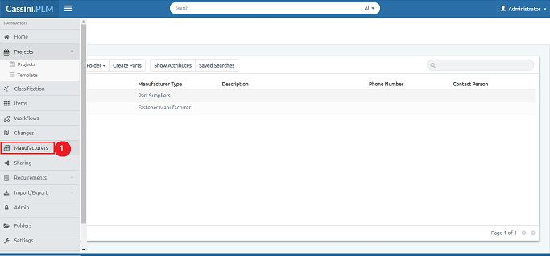

Manufacturers tab provides complete list manufacturers, creating manufacturers helps in getting details about various part suppliers and list of parts they are supplying. Here user can create manufacturers, add parts, and upload related files or documents.
1. Select Manufacturers from navigation bar

2. Click on New Manufacturer
3. New Manufacturer panel opens
4. Select Manufacturer type, Fill in details (Name, Des., Phone, and Contact person)
5. Click on Create (Manufacturer created successfully)
1. Click on Manufacturer name

2. Select Parts tab
3. Click on Create Parts
4. New Manufacturer Part panel opens
5. Select Manufacturer Type
6. Fill in details (Part Number, Name, Des., and Status)
7. Click on Create (Manufacturer part added successfully)